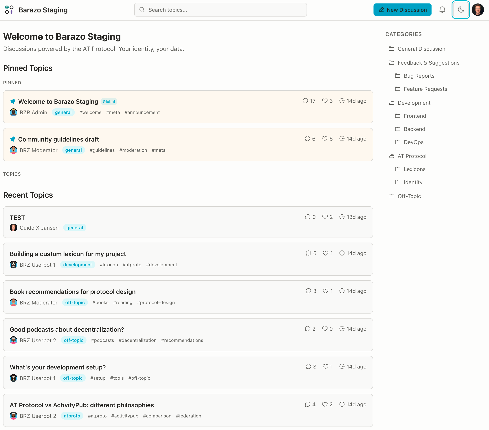

A forum platform where your identity and data actually belong to you.
Barazo is a decentralized forum on the AT Protocol, now in open alpha. Your identity and posts live on your PDS, not locked inside each community. One account across all forums, and bring your reputation capital along to new forums.
It works, it has rough edges, and we're building in public, with our community. This is the right moment to give us your brutal feedback and shape your next (and final) community platform.

Everything is open source: AGPL for the backend, MIT for the frontend, lexicons, and deployment templates. Grab the Docker Compose template and host it wherever you want.
Anyone with a Bluesky or AT Protocol identity can join your forum without signing up. You bring one community online, and everyone who's already on the protocol walks right in.
Managed hosting is in development. Join the waitlist if you want us to run it for you.
Portable identity across every Barazo community and real data ownership: your posts live in your PDS, so you can take them with you if you leave. If Barazo ever shuts down, your data doesn't disappear with it.
No more creating separate accounts for every forum. No more losing your post history when a community closes. And no artificial limits on your history -- community owners and members can access every post ever made, not just the last 90 days.
I've managed online communities for over 20 years -- on vBulletin, phpBB, Slack, Discord, Discourse, Facebook Groups. The pattern is always the same. You do the work to build a community, onboard thousands of members, and then the platform changes the rules. Slack limits your message history to 90 days and raises per-member pricing. Facebook charges you to reach members of your own group. LinkedIn makes you pay to message connections you built. Every migration means your most respected members show up as "new user" on the next platform, and the community never fully recovers.
These platforms hold your members hostage. The relationships you built become leverage against you. The AT Protocol finally makes it technically possible to break that cycle -- your members own their identity, their posts live on their own data server, and no platform can stand between you and the community you built.
"After 20 years of building communities on platforms that eventually held them hostage, I decided to build the thing I wish existed a decade ago. Barazo means the people who contributed to your community still own their posts, still carry their reputation, and can never be locked out by a platform that decided to monetize your relationship with them."
— Guido Jansen, founder
Managed hosting is coming in Q3 2026 for community managers who don't want to run their own infrastructure. Same open source stack, we just handle the ops. Join the waitlist if that's you.
We're also working on a plugin system, an explore directory to discover communities across the network, and deeper integration with Sifa's trust infrastructure as it matures.
Barazo is one of two products from Singi Labs, built by Guido Jansen in the Netherlands. Its sibling Sifa is a professional identity layer for the AT Protocol. As Barazo communities grow, your forum contributions will appear as verified activity on your Sifa professional profile. And Sifa's trust infrastructure (sybil detection, anti-abuse labels) feeds back into Barazo to help keep communities safe.
Open source (AGPL + MIT). Built on independent EU infrastructure. Self-host it anywhere.